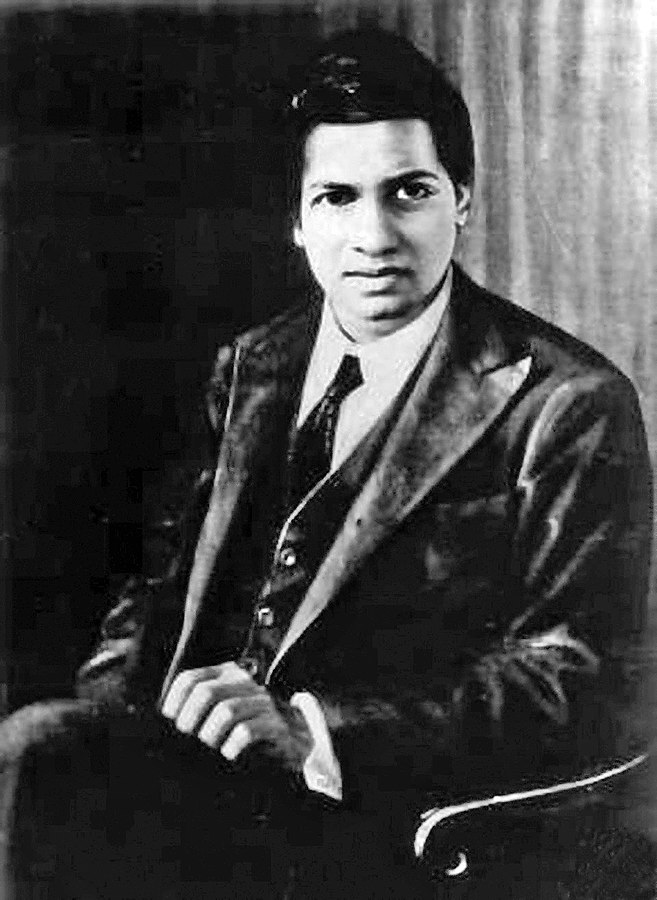

Dr. Srinivasa Ramanujan, his contributions were to the fields of mathematical analysis, number theory, infinite series, and continued fractions.
The Man Who Knew Infinity.
Dr. Srinivasa Ramanujan, his contributions were to the fields of mathematical analysis, number theory, infinite series, and continued fractions.
"An equation means nothing to me unless it expresses a thought of God."
--Dr. Srinivas Ramanujan